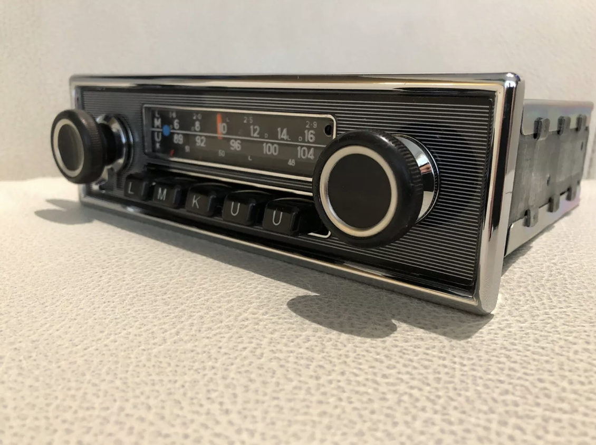
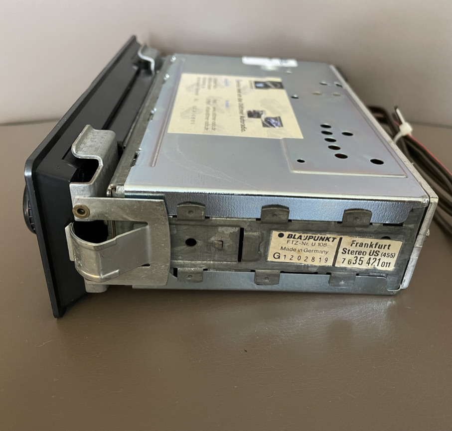
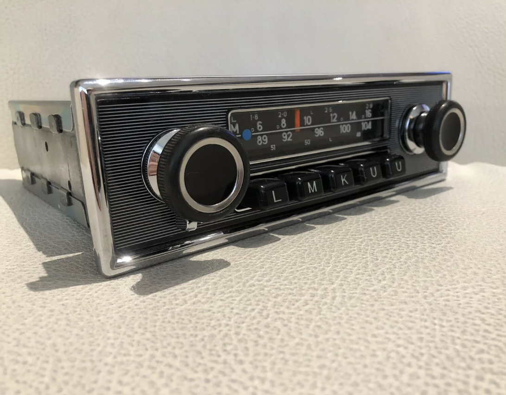

Service seit 1989
Originalklang für Ihren Klassiker.
Restaurierte Autoradios und Ersatzteile für Becker, Blaupunkt und Telefunken — geprüft, eingemessen, einbaufertig für Ihren Oldtimer.

35+ JahreErfahrung mit Oldtimer-Autoradios
27+ MarkenVon Alfa bis Volvo — Originalteile im Sortiment
Geprüft & eingemessenJedes Gerät vor Versand getestet
Was wir tun
Zwei Wege zum Originalklang
Aus der Werkstatt
Handarbeit im Detail
Jedes Radio wird zerlegt, gereinigt, geprüft und wieder original zusammengesetzt — bevor es Ihren Oldtimer erreicht.


